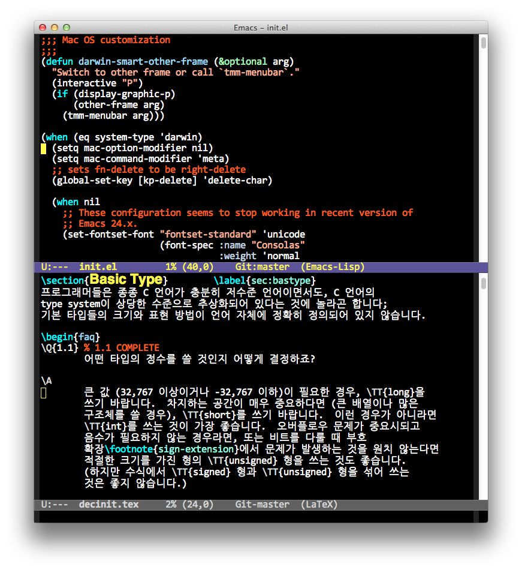

OS X Emacs 24.1 Fontset revised
Whenever I installed new Emacs version, the init script for fontset turned out not working. It is sad that even now Emacs fontset related API is somewhat unstable. I cannot blame Emacs developers for this. Part of the reason is there are so many bad font (esp. Korean font) which works very poorly on non-Windows machines.
Anyway, the script in my previous post does not work with the stable 24.1 binary from EmacsForMacOsX.
Here are working version of Emacs snippet that uses different font for multiple charset:
(when (eq system-type 'darwin)
;; These configuration seems to work in
;; GNU Emacs 24.1.1 (x86_64-apple-darwin, NS apple-appkit-1038.36)
;; of 2012-06-11 on bob.porkrind.org
;; default font family
(set-face-attribute 'default nil :family "Consolas")
;; default font size
;;
;; WARNING: depending on the default font, some height value may
;; cause a broken frame display; that is, the beginning of the
;; buffer is not visible.
(set-face-attribute 'default nil :height 165)
;; You may add :size POINT in below font-spec if you want to use
;; specific size of Hangul font regardless of default font size
(set-fontset-font t 'hangul
(font-spec :name "NanumGothicCoding")))
Height 165 seems to work well with "Consolas" font.
Yes! The height is 165 (about 16 pt). As I'm growing old, I cannot use smaller font size any more. It sucks! Anyway, here is the screenshot with the above setting:
[[]
I tried with several fonts such as Monaco, Andale Mono, and so on but I found Consolas is superior among others (this is my biased opinion, of course.)
댓글
Comments powered by Disqus